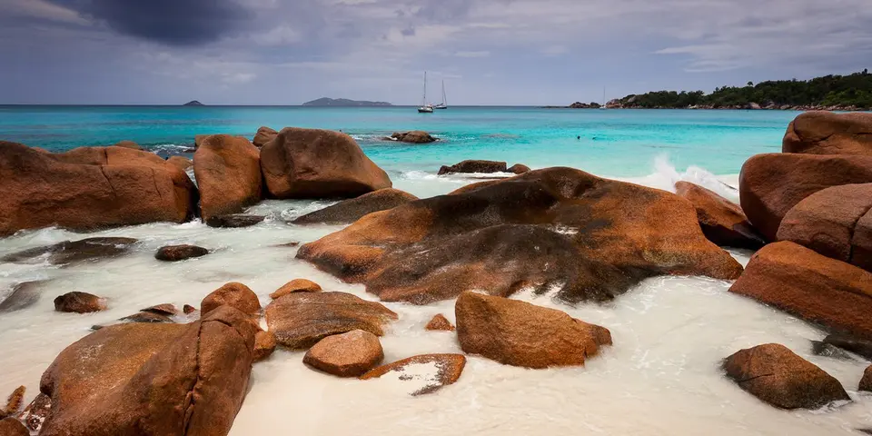

Sub-Saharan Africa
Seychelles on a budget
The Seychelles has granite boulder beaches on remote islands. It is pricey, but self-catering guesthouses, local buses and ferries make Mahé, Praslin and La Digue doable on a budget.
Photo: Svein-Magne Tunli - tunliweb.no, CC BY-SA 4.0, via Wikimedia Commons

Classic route
Mahé, Praslin and La Digue. 1 week.
Before you go
Flights to La Digue: Skyscanner · Kiwi.com · Google Flights
Hostels and guesthouses in La Digue · Praslin · Mahé · Curieuse Island
Tours and tickets: La Digue · Praslin
Mobile data: Seychelles eSIM
Travel insurance: SafetyWing
How much 8 places in Seychelles cost
Daily budgets per person in US dollars: a hostel dorm or simple guesthouse, local food, local transport and the usual entry fees.
-
La Digue
Pedal past giant tortoises to Anse Source d'Argent's sculpted granite boulders on an island where bicycles replace cars.
Bed $60 · Food $25 · Getting around $6 · Extras $10
Budget tip: Self-catering guesthouses save a lot. Rent a bike for your whole stay and buy groceries and takeaway curries in La Passe.
$101per day -
Praslin
Walk among giant coco de mer palms in the Vallée de Mai forest, then swim at the soft white curve of Anse Lazio beach.
Bed $60 · Food $25 · Getting around $6 · Extras $15
Budget tip: Local buses cost a few rupees and reach both the Vallée de Mai and Anse Lazio. Bring a picnic from a supermarket.
$106per day -
Mahé
Granite boulders and turquoise water at Anse Intendance and Anse Takamaka, plus jungle hikes up Morne Blanc and Copolia.
Bed $60 · Food $25 · Getting around $4 · Extras $5
Budget tip: Public buses cost under $1 and cover the whole island. Self-catering apartments and takeaway counters save a lot.
$94per day -
Curieuse Island
Hundreds of giant tortoises roam a small island off Praslin, with a mangrove boardwalk and red-earth trails.
Bed $60 · Food $25 · Getting around $12 · Extras $20
Budget tip: Take a shared boat trip from Praslin that adds snorkelling at St Pierre islet.
$117per day -
Victoria
One of the world's smallest capitals, with the clock tower, the colourful Sir Selwyn Selwyn-Clarke Market, a Hindu temple and island creole snacks.
Bed $50 · Food $20 · Getting around $3 · Extras $2
Budget tip: Shop the market for fruit, fish and spices to cook yourself, and use public buses from the Victoria terminal to explore the rest of Mahé.
$75per day -
Sainte Anne Marine Park
Group of islands off Victoria with coral reefs, glass-bottom boat trips, green turtles and sandy beaches on Moyenne and Cerf islands.
Bed $60 · Food $25 · Getting around $10 · Extras $25
Budget tip: Snorkel independently from Cerf Island or Moyenne by taking a water taxi, and bring your own mask and lunch to cut costs.
$120per day -
Cousin Island
Small special reserve near Praslin where fearless seabirds nest, hawksbill turtles lay eggs on the beach and rangers lead short walks.
Bed $60 · Food $25 · Getting around $15 · Extras $40
Budget tip: Tours run on weekday mornings from Praslin; book directly with boat operators on Côte d'Or rather than hotel desks. Landing fees apply.
$140per day -
Silhouette Island
Mountainous island west of Mahé with granite peaks, misty forest trails, giant tortoises and protected reefs, mostly covered by a national park.
Bed $80 · Food $30 · Getting around $20 · Extras $15
Budget tip: Accommodation is limited and costly, so many visit on a day trip from Mahé. Pack food, as on-island options are expensive.
$145per day
Know before you go
Seychelles on a budget: the basics
Currency
$1 = 14.66 SCR
Seychellois rupee
| Dollars to SCR | SCR to dollars | ||
|---|---|---|---|
| $1 | 14.66 SCR | 10 SCR | $0.682 |
| $5 | 73.29 SCR | 50 SCR | $3.41 |
| $10 | 147 SCR | 100 SCR | $6.82 |
| $20 | 293 SCR | 500 SCR | $34.11 |
| $50 | 733 SCR | 1,000 SCR | $68.22 |
| $100 | 1,466 SCR | 5,000 SCR | $341 |
A typical day here (about $106) is roughly 1,600 SCR.
Mid-market rate on 2026-10-05. Cash machines and exchange desks pay a little less.
Getting around
Cheap public buses cover Mahé and Praslin, and bikes are the main way around La Digue. Inter-island ferries link Mahé, Praslin and La Digue several times a day and are worth booking ahead in busy months. Car rental is useful on Mahé, but driving is on the left on narrow roads.
Where to sleep
There are no hostels and camping is not allowed, so budget travellers use self-catering guesthouses and small family-run places. Book early for the December to January and Easter peaks.
What to eat
- Kari zourit: octopus curry with coconut milk
- Ladob: sweet plantain or breadfruit cooked in coconut milk
- Grilled fish: fresh catch with Creole sauces
- SeyBrew: the local lager
Money
Cards are widely accepted, and ATMs are on the main islands. Haggling isn't common, and many restaurants add a service charge.
Phone data
Airtel and Cable & Wireless SIMs need a passport, and coverage is good on the inhabited islands.
Heads up
Takeaway counters selling Creole plate lunches are the cheapest way to eat, much cheaper than resort restaurants.
Seychelles travel: quick answers
How much does a day in Seychelles cost on a budget?
About $106 a day for one person, from $75 in Victoria to $145 in Silhouette Island. That covers a hostel dorm or simple guesthouse, local food, local transport and the usual entry fees, so a week runs about $742 before flights.
When is the best time to visit Seychelles?
April to May and October to November is the best time, with the most reliable weather for getting around.
What is the cheapest place to visit in Seychelles?
Victoria, at about $75 a day. One of the world's smallest capitals, with the clock tower, the colourful Sir Selwyn Selwyn-Clarke Market, a Hindu temple and island creole snacks.
How long do you need in Seychelles?
Mahé, Praslin and La Digue. 1 week.
How much is $1 in Seychelles?
One US dollar is about 14.66 Seychellois rupee (SCR), going by the mid-market rate on 2026-10-05. So $20 is roughly 293 SCR, and a typical budget day of $106 comes to about 1,600 SCR.
How do you get around Seychelles cheaply?
Cheap public buses cover Mahé and Praslin, and bikes are the main way around La Digue. Inter-island ferries link Mahé, Praslin and La Digue several times a day and are worth booking ahead in busy months. Car rental is useful on Mahé, but driving is on the left on narrow roads.
What food should you try in Seychelles?
Kari zourit, octopus curry with coconut milk. Ladob, sweet plantain or breadfruit cooked in coconut milk. Grilled fish, fresh catch with Creole sauces. SeyBrew, the local lager.
Planning around the seasons? See where to go in April, or compare the cheapest countries nearby.